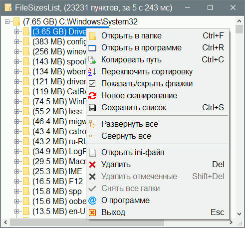
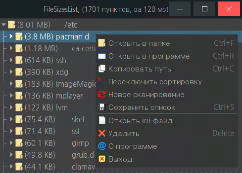

FileSizesList
Назначение
Показывает дерево размеров файлов и папок. Полезно для выявления затраченного места на диске


Взаимосвязанные
Create_list_files
Find_GUI - Linux
Программа принимает путь к папке, как входной параметр, поэтому необходимо добавить эту программу в контекстное меню файлового менеджера с передачей пути.
Если запущено без параметров, то предлагается выбрать путь вручную через диалог выбора папки.
Программа выводит древовидную структуру папок и файлов, добавляя в начало каждого пункта размер файла/папки. Выполняется сортировка по размеру в пределах папки, но в пределах одного уровня папки всегда выше файлов, даже если файл больше размером.
Для Windows добавить в контекстное меню можно также с помощью моей утилиты SubMenuWin7_10
Пункты меню:
 Открыть в папке - открывает папку, в которой находится выделенный элемент и выделяет его
Открыть в папке - открывает папку, в которой находится выделенный элемент и выделяет его
 Открыть в программе - открывает в ассоциированной программе
Открыть в программе - открывает в ассоциированной программе
 Копировать путь - копирует полный путь к выделенному элементу
Копировать путь - копирует полный путь к выделенному элементу
Переключить сортировку - переключает между двумя режимами - сортировка по размеру и по имени. Результаты не кеширует, поэтому переключение каждый раз сортирует и тратится время для большого количества файлов.
Показать/скрыть флажки - позволяет групповое удаление элементов с помощью установки флажков
Новое сканирование - Запускает выбор и сканирование другой папки
 Сохранить список - сохраняет форматированный список. Смотрите раздел [List] в ini-файле
Сохранить список - сохраняет форматированный список. Смотрите раздел [List] в ini-файле
Развернуть все - разворачивает выделенное дерево. В отличии от горячих клавиш действует на всё дерево.
Свернуть все - сворачивает выделенное дерево. В отличии от горячих клавиш действует на всё дерево.
Открыть ini-файл - для настройки последующих запусков
 Удалить - удаляет выбранный файл
Удалить - удаляет выбранный файл
Удалить отмеченные - удаляет отмеченные флажком файлы
 Снять все галки - снимает флажки
Снять все галки - снимает флажки
Настройки в ini-файле
[Set] - секция параметров
width = 500 - ширина окна, сохраняемая автоматически при выходе из программы
height = 600 - высота окна, сохраняемая автоматически при выходе из программы
registry = 1 - спрашивать прописку в реестр при запуске без параметров, если 0, то не спрашивать (Windows)
checkbox = 0 - если 1, то отображать чекбоксы (галки/флажки), в меню появляется 2 пункта - "удалить отмеченное" и "снять все галки"
itemdel = 0 - флаг удаления, если 1, то вместо того чтобы указать "* Удалено", пункт удаляется из списка.
sort = 1 - Сортирует по размеру, иначе как в проводнике.
forcelang = 1 - принудительно язык, 1 - англ, 2 - русский, 0 - автоматически.
icon = 500 - число файлов и папок, при котором отображать ассоциативные иконки. Не рекомендуется больше 3000, так как это увеличивает время построения списка в 2 раза. Чтобы совсем отключить icon = 0 (Windows)
recycle = 1 - флаг чтобы удалить в корзину, иначе 0, чтобы удалить безвозвратно
warning = 1 - (отключено) выдавать предупреждение при удалении одного файла/папки или отмеченных, иначе 0 не предупреждать. Причём при удалении в корзину (recycle = 1) одного файла/папки предупреждение не выдаётся, так как легко можно восстановить из корзины.
fm = nemo - Файловый менеджер для открытия папок и файлов (Linux)
[List] - секция параметров экспортируемого списка файлов
tofile = 1 - сохранить в файл или буфер обмена
flag = 14 - (2+4+8) комбинация флагов:
0 - по умолчанию.
1 - отступ меньше на 1.
2 - без первой строки, где указывается путь исследуемой папки.
4 - если список без папок, то не добавляет префикс к файлам.
8 - показывать размер
flag2 = 6 - тоже что предыдущий, но для режима "без сортировки по размеру"
Depth = │\t - элемент отступа глубины вложенности, где \t это табуляция
Folder = ├─🖿 - значок папки, можно выбрать тут https://unicodes.jessetane.com/?search = triangle
; Folder = ├─🖿
; Folder = ├─◢
; Folder = ├─🗁
File = ├─ - значок файла
Пример форматированного списка
При сохранении списка задайте настройки в секции [List], как отображать значки папок и отступы
├─🖿 i386-pc
│ ├─core.img
├─🖿 fonts
│ ├─unicode.pf2
├─unicode.pf2
├─grub.cfg
Заимствования
Значимую часть кода (рекурсивное создание структур файловой системы) предоставил Пётр здесь: purebasic.mybb.ru